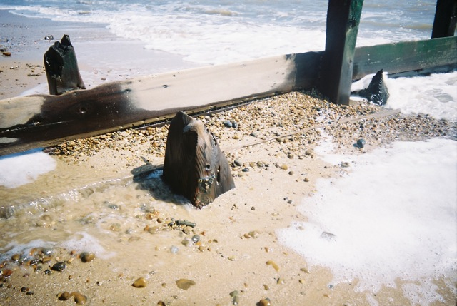

On Vanishing Land

Soundtrack music for the audio essay and installation “On Vanishing Land” by Justin Barton and Mark Fisher
Installed at: The Showroom, London NW8 8PQ, 6 February - 7 April 2013 Beirut Art Centre, 25-30 October 2013
Music by Baron Mordant, Dolly Dolly, Ekoplekz, Farmers of Vega, Gazelle Twin, John Foxx, Pete Wiseman, Raime and Skjolbrot